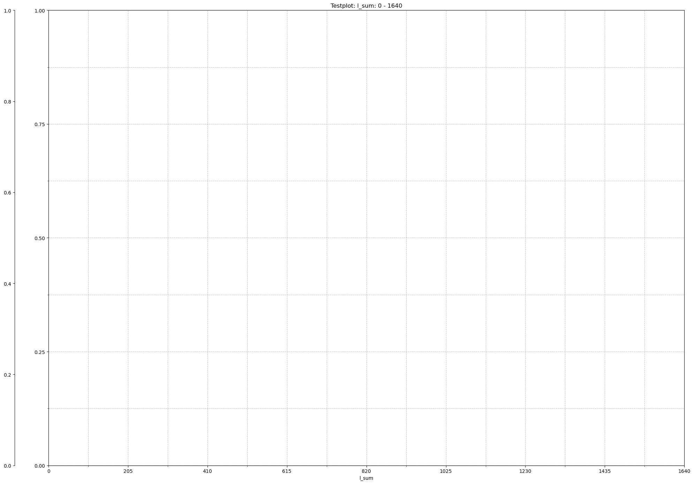
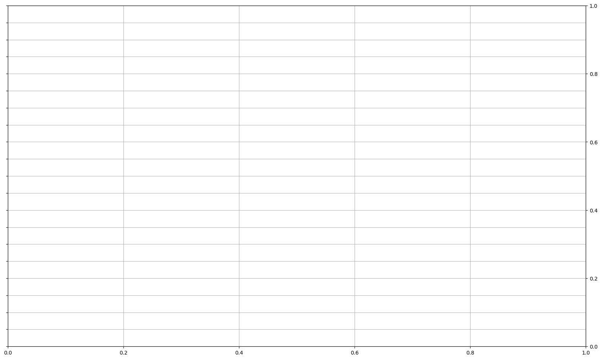

Tutorial 72: WORK IN PROGRESS: Longitudinal Sections
This example demonstrates how to …
SIR 3S Installation
[1]:
SIR3S_SIRGRAF_DIR = r"C:\3S\SIR 3S\SirGraf-90-15-00-24_Quebec-Upd2" #change to local path
Imports
[2]:
from sir3stoolkit.core import wrapper
[3]:
from sir3stoolkit.mantle import mantle
The wrapper package has to be initialized with reference to a SIR 3S (SirGraf) installation.
[4]:
wrapper.Initialize_Toolkit(SIR3S_SIRGRAF_DIR)
[2026-11-25 16:27:34,606] INFO in sir3stoolkit.core.wrapper: [Initialization] Using provided SirGraf path: C:\3S\SIR 3S\SirGraf-90-15-00-24_Quebec-Upd2
[2026-11-25 16:27:34,606] INFO in sir3stoolkit.core.wrapper: [Initialization] Using provided SirGraf path: C:\3S\SIR 3S\SirGraf-90-15-00-24_Quebec-Upd2
[2026-11-25 16:27:34,621] INFO in sir3stoolkit.core.wrapper: [Initialization] Initializing toolkit with SirGraf path: C:\3S\SIR 3S\SirGraf-90-15-00-24_Quebec-Upd2
[2026-11-25 16:27:34,802] INFO in sir3stoolkit.core.wrapper: [Initialization] Sir3S_Toolkit.dll file version 90.15.11.0 (matches this sir3stoolkit version).
Additional imports
[5]:
import os
…
Initialization
[6]:
s3s = mantle.SIR3S_Model_Mantle()
[2026-11-25 16:27:34,971] INFO in sir3stoolkit.core.wrapper: [Model Class Initialization] Initialization complete
Open Model
The tutorial uses Network 3, a fictional district heating network shared by the mantle tutorials: a heat plant (in its own container “Heizwerk”), about 180 consumers, a ring road and two longitudinal sections, calculated over one day. It is built from scratch with the SIR 3S Toolkit by Network3.py; Network3.db3 is included in the tutorial’s ZIP archive.
Its elements have unique ID references (IDREFERENZ), e.g. VL-HS-01 for the first supply pipe of the main street. They are used below to look up tks with GetTkFromIDReference() - the tks themselves differ between builds of the model.
[7]:
dbFilePath=r"Network3.db3"
[8]:
s3s.OpenModel(dbName=dbFilePath,
providerType=s3s.ProviderTypes.SQLite,
Mid="M-1-0-1",
saveCurrentlyOpenModel=False,
namedInstance="",
userID="",
password="")
[2026-11-25 16:27:40,874] INFO in sir3stoolkit.core.wrapper: Model is open for further operation
Calculate Model
[9]:
s3s.ExecCalculation(True)
[2026-11-25 16:27:46,303] INFO in sir3stoolkit.core.wrapper: Model Calculation is complete
Get Data
[10]:
dfs = s3s.generate_longitudinal_section_dataframes()
[2026-11-25 16:27:46,314] INFO in sir3stoolkit.mantle.dataframes: [model_data] Generating model_data dataframe for element type: ObjectTypes.AGSN_HydraulicProfile
[2026-11-25 16:27:46,319] INFO in sir3stoolkit.mantle.dataframes: [model_data] Retrieved 2 element(s) of element type ObjectTypes.AGSN_HydraulicProfile.
[2026-11-25 16:27:46,331] INFO in sir3stoolkit.mantle.dataframes: [Resolving model_data Properties] No properties given → using ALL model_data properties for ObjectTypes.AGSN_HydraulicProfile.
[2026-11-25 16:27:46,332] INFO in sir3stoolkit.mantle.dataframes: [Resolving model_data Properties] Using 9 model_data properties.
[2026-11-25 16:27:46,332] INFO in sir3stoolkit.mantle.dataframes: [model_data] Retrieving model_data properties ['Name', 'Lfdnr', 'Aktiv', 'AllNodesAndLinks', 'ObjsString', 'MainWay', 'Tk', 'Pk', 'InVariant']...
[2026-11-25 16:27:46,346] INFO in sir3stoolkit.mantle.dataframes: [model_data] Done. Shape: (2, 10)
[2026-11-25 16:27:46,346] INFO in sir3stoolkit.mantle.dataframes: Retrieving Hydraulic Profile with Lfdnr: 1.
[2026-11-25 16:27:46,358] INFO in sir3stoolkit.mantle.dataframes: [generate_element_dataframe] Generating df for element type: ObjectTypes.Pipe ...
[2026-11-25 16:27:46,358] INFO in sir3stoolkit.mantle.dataframes: [generate_element_dataframe] Generating df_model_data for element type: ObjectTypes.Pipe ...
[2026-11-25 16:27:46,363] INFO in sir3stoolkit.mantle.dataframes: [model_data] Generating model_data dataframe for element type: ObjectTypes.Pipe
[2026-11-25 16:27:46,363] INFO in sir3stoolkit.mantle.dataframes: [Resolving tks] Retrieved 572 element(s) of element type ObjectTypes.Pipe.
[2026-11-25 16:27:46,363] INFO in sir3stoolkit.mantle.dataframes: [Resolving tks] 17 tks remain after filtering for given tks.
[2026-11-25 16:27:46,363] INFO in sir3stoolkit.mantle.dataframes: [Resolving model_data Properties] No properties given → using ALL model_data properties for ObjectTypes.Pipe.
[2026-11-25 16:27:46,363] INFO in sir3stoolkit.mantle.dataframes: [Resolving model_data Properties] Using 46 model_data properties.
[2026-11-25 16:27:46,363] INFO in sir3stoolkit.mantle.dataframes: [model_data] Retrieving model_data properties ['Name', 'FkdtroRowd', 'Fkltgr', 'Fkstrasse', 'L', 'Lzu', 'Rau', 'Jlambs', 'Lambda0', 'Zein', 'Zaus', 'Zuml', 'Asoll', 'Indschall', 'Baujahr', 'Hal', 'Fkcont', 'Fk2lrohr', 'Beschreibung', 'Idreferenz', 'Iplanung', 'Kvr', 'LineWidthMM', 'DottedLine', 'DN', 'Di', 'KvrKlartext', 'HasClosedNSCHs', 'Tk', 'Pk', 'InVariant', 'Xkor', 'Ykor', 'GeometriesDiffer', 'bz.Fk', 'bz.Qsvb', 'bz.Irtrenn', 'bz.Leckstatus', 'bz.Leckstart', 'bz.Leckend', 'bz.Leckort', 'bz.Leckmenge', 'bz.Imptnz', 'bz.Zvlimptnz', 'bz.Kantenzv', 'bz.ITrennWithNSCH'], geometry, end nodes...
[2026-11-25 16:27:46,619] INFO in sir3stoolkit.mantle.dataframes: [model_data] 2 non-empty end node columns were created.
[2026-11-25 16:27:46,769] WARNING in sir3stoolkit.mantle.dataframes: [model_data] Spatial Reference Identifier (SRID) not defined in model. DataFrame cannot be transformed to GeoDataFrame but geometry column can be created independently of SRID. Returning regular DataFrame with a geometry column.
[2026-11-25 16:27:46,771] INFO in sir3stoolkit.mantle.dataframes: [model_data] Done. Shape: (17, 67)
[2026-11-25 16:27:46,855] INFO in sir3stoolkit.mantle.dataframes: [generate_element_dataframe] Generating df_results for element type: ObjectTypes.Pipe ...
[2026-11-25 16:27:46,855] INFO in sir3stoolkit.mantle.dataframes: [results] Generating results dataframe for element type: ObjectTypes.Pipe
[2026-11-25 16:27:46,921] INFO in sir3stoolkit.mantle.dataframes: [Resolving Timestamps] Only static timestamp 2026-01-15 00:00:00.000 +01:00 is used
[2026-11-25 16:27:46,921] INFO in sir3stoolkit.mantle.dataframes: [Resolving tks] Retrieved 572 element(s) of element type ObjectTypes.Pipe.
[2026-11-25 16:27:46,921] INFO in sir3stoolkit.mantle.dataframes: [Resolving tks] 17 tks remain after filtering for given tks.
[2026-11-25 16:27:46,924] INFO in sir3stoolkit.mantle.dataframes: [results] Using 82 result properties.
[2026-11-25 16:27:46,924] INFO in sir3stoolkit.mantle.dataframes: [results] 1 timestamp(s), 17 element(s), 82 properties resolved (0.1 s).
[2026-11-25 16:27:46,924] INFO in sir3stoolkit.mantle.dataframes: [results] Retrieving result values... (bulk=False)
[2026-11-25 16:27:46,971] INFO in sir3stoolkit.mantle.dataframes: [results] GetResultfortimestamp(): 23 % (328/1,394 values, 0.1 s)
[2026-11-25 16:27:46,997] INFO in sir3stoolkit.mantle.dataframes: [results] GetResultfortimestamp(): 41 % (574/1,394 values, 0.1 s)
[2026-11-25 16:27:47,029] INFO in sir3stoolkit.mantle.dataframes: [results] GetResultfortimestamp(): 64 % (902/1,394 values, 0.1 s)
[2026-11-25 16:27:47,045] INFO in sir3stoolkit.mantle.dataframes: [results] GetResultfortimestamp(): 82 % (1,148/1,394 values, 0.1 s)
[2026-11-25 16:27:47,071] INFO in sir3stoolkit.mantle.dataframes: [results] GetResultfortimestamp(): 100 % (1,394/1,394 values, 0.1 s)
[2026-11-25 16:27:47,083] INFO in sir3stoolkit.mantle.dataframes: [results] 1,394 value(s) retrieved via GetResultfortimestamp() (0.2 s).
[2026-11-25 16:27:47,165] INFO in sir3stoolkit.mantle.dataframes: [results] 901 fully NaN columns dropped.
[2026-11-25 16:27:47,169] INFO in sir3stoolkit.mantle.dataframes: [results] DataFrame assembled (0.0 s).
[2026-11-25 16:27:47,171] INFO in sir3stoolkit.mantle.dataframes: [results] Done. Shape: (1, 646) (0.3 s in total)
[2026-11-25 16:27:47,173] INFO in sir3stoolkit.mantle.dataframes: [generate_element_dataframe] Merging df_model_data with df_results for element type: ObjectTypes.Pipe ...
[2026-11-25 16:27:47,190] INFO in sir3stoolkit.mantle.dataframes: [generate_element_dataframe] Generating df for element type: ObjectTypes.Pipe ...
[2026-11-25 16:27:47,190] INFO in sir3stoolkit.mantle.dataframes: [generate_element_dataframe] Generating df_model_data for element type: ObjectTypes.Pipe ...
[2026-11-25 16:27:47,190] INFO in sir3stoolkit.mantle.dataframes: [model_data] Generating model_data dataframe for element type: ObjectTypes.Pipe
[2026-11-25 16:27:47,194] INFO in sir3stoolkit.mantle.dataframes: [Resolving tks] Retrieved 572 element(s) of element type ObjectTypes.Pipe.
[2026-11-25 16:27:47,194] INFO in sir3stoolkit.mantle.dataframes: [Resolving tks] 17 tks remain after filtering for given tks.
[2026-11-25 16:27:47,194] INFO in sir3stoolkit.mantle.dataframes: [Resolving model_data Properties] No properties given → using ALL model_data properties for ObjectTypes.Pipe.
[2026-11-25 16:27:47,194] INFO in sir3stoolkit.mantle.dataframes: [Resolving model_data Properties] Using 46 model_data properties.
[2026-11-25 16:27:47,194] INFO in sir3stoolkit.mantle.dataframes: [model_data] Retrieving model_data properties ['Name', 'FkdtroRowd', 'Fkltgr', 'Fkstrasse', 'L', 'Lzu', 'Rau', 'Jlambs', 'Lambda0', 'Zein', 'Zaus', 'Zuml', 'Asoll', 'Indschall', 'Baujahr', 'Hal', 'Fkcont', 'Fk2lrohr', 'Beschreibung', 'Idreferenz', 'Iplanung', 'Kvr', 'LineWidthMM', 'DottedLine', 'DN', 'Di', 'KvrKlartext', 'HasClosedNSCHs', 'Tk', 'Pk', 'InVariant', 'Xkor', 'Ykor', 'GeometriesDiffer', 'bz.Fk', 'bz.Qsvb', 'bz.Irtrenn', 'bz.Leckstatus', 'bz.Leckstart', 'bz.Leckend', 'bz.Leckort', 'bz.Leckmenge', 'bz.Imptnz', 'bz.Zvlimptnz', 'bz.Kantenzv', 'bz.ITrennWithNSCH'], geometry, end nodes...
[2026-11-25 16:27:47,247] INFO in sir3stoolkit.mantle.dataframes: [model_data] 2 non-empty end node columns were created.
[2026-11-25 16:27:47,379] WARNING in sir3stoolkit.mantle.dataframes: [model_data] Spatial Reference Identifier (SRID) not defined in model. DataFrame cannot be transformed to GeoDataFrame but geometry column can be created independently of SRID. Returning regular DataFrame with a geometry column.
[2026-11-25 16:27:47,379] INFO in sir3stoolkit.mantle.dataframes: [model_data] Done. Shape: (17, 67)
[2026-11-25 16:27:47,435] INFO in sir3stoolkit.mantle.dataframes: [generate_element_dataframe] Generating df_results for element type: ObjectTypes.Pipe ...
[2026-11-25 16:27:47,435] INFO in sir3stoolkit.mantle.dataframes: [results] Generating results dataframe for element type: ObjectTypes.Pipe
[2026-11-25 16:27:47,492] INFO in sir3stoolkit.mantle.dataframes: [Resolving Timestamps] Only static timestamp 2026-01-15 00:00:00.000 +01:00 is used
[2026-11-25 16:27:47,492] INFO in sir3stoolkit.mantle.dataframes: [Resolving tks] Retrieved 572 element(s) of element type ObjectTypes.Pipe.
[2026-11-25 16:27:47,492] INFO in sir3stoolkit.mantle.dataframes: [Resolving tks] 17 tks remain after filtering for given tks.
[2026-11-25 16:27:47,502] INFO in sir3stoolkit.mantle.dataframes: [results] Using 82 result properties.
[2026-11-25 16:27:47,503] INFO in sir3stoolkit.mantle.dataframes: [results] 1 timestamp(s), 17 element(s), 82 properties resolved (0.1 s).
[2026-11-25 16:27:47,503] INFO in sir3stoolkit.mantle.dataframes: [results] Retrieving result values... (bulk=False)
[2026-11-25 16:27:47,540] INFO in sir3stoolkit.mantle.dataframes: [results] GetResultfortimestamp(): 23 % (328/1,394 values, 0.0 s)
[2026-11-25 16:27:47,555] INFO in sir3stoolkit.mantle.dataframes: [results] GetResultfortimestamp(): 41 % (574/1,394 values, 0.1 s)
[2026-11-25 16:27:47,587] INFO in sir3stoolkit.mantle.dataframes: [results] GetResultfortimestamp(): 64 % (902/1,394 values, 0.1 s)
[2026-11-25 16:27:47,603] INFO in sir3stoolkit.mantle.dataframes: [results] GetResultfortimestamp(): 82 % (1,148/1,394 values, 0.1 s)
[2026-11-25 16:27:47,634] INFO in sir3stoolkit.mantle.dataframes: [results] GetResultfortimestamp(): 100 % (1,394/1,394 values, 0.1 s)
[2026-11-25 16:27:47,644] INFO in sir3stoolkit.mantle.dataframes: [results] 1,394 value(s) retrieved via GetResultfortimestamp() (0.1 s).
[2026-11-25 16:27:47,671] INFO in sir3stoolkit.mantle.dataframes: [results] 901 fully NaN columns dropped.
[2026-11-25 16:27:47,671] INFO in sir3stoolkit.mantle.dataframes: [results] DataFrame assembled (0.0 s).
[2026-11-25 16:27:47,680] INFO in sir3stoolkit.mantle.dataframes: [results] Done. Shape: (1, 646) (0.2 s in total)
[2026-11-25 16:27:47,680] INFO in sir3stoolkit.mantle.dataframes: [generate_element_dataframe] Merging df_model_data with df_results for element type: ObjectTypes.Pipe ...
[2026-11-25 16:27:47,685] INFO in sir3stoolkit.mantle.dataframes: Retrieving Hydraulic Profile with Lfdnr: 2.
[2026-11-25 16:27:47,693] INFO in sir3stoolkit.mantle.dataframes: [generate_element_dataframe] Generating df for element type: ObjectTypes.Pipe ...
[2026-11-25 16:27:47,698] INFO in sir3stoolkit.mantle.dataframes: [generate_element_dataframe] Generating df_model_data for element type: ObjectTypes.Pipe ...
[2026-11-25 16:27:47,698] INFO in sir3stoolkit.mantle.dataframes: [model_data] Generating model_data dataframe for element type: ObjectTypes.Pipe
[2026-11-25 16:27:47,701] INFO in sir3stoolkit.mantle.dataframes: [Resolving tks] Retrieved 572 element(s) of element type ObjectTypes.Pipe.
[2026-11-25 16:27:47,701] INFO in sir3stoolkit.mantle.dataframes: [Resolving tks] 15 tks remain after filtering for given tks.
[2026-11-25 16:27:47,702] INFO in sir3stoolkit.mantle.dataframes: [Resolving model_data Properties] No properties given → using ALL model_data properties for ObjectTypes.Pipe.
[2026-11-25 16:27:47,703] INFO in sir3stoolkit.mantle.dataframes: [Resolving model_data Properties] Using 46 model_data properties.
[2026-11-25 16:27:47,703] INFO in sir3stoolkit.mantle.dataframes: [model_data] Retrieving model_data properties ['Name', 'FkdtroRowd', 'Fkltgr', 'Fkstrasse', 'L', 'Lzu', 'Rau', 'Jlambs', 'Lambda0', 'Zein', 'Zaus', 'Zuml', 'Asoll', 'Indschall', 'Baujahr', 'Hal', 'Fkcont', 'Fk2lrohr', 'Beschreibung', 'Idreferenz', 'Iplanung', 'Kvr', 'LineWidthMM', 'DottedLine', 'DN', 'Di', 'KvrKlartext', 'HasClosedNSCHs', 'Tk', 'Pk', 'InVariant', 'Xkor', 'Ykor', 'GeometriesDiffer', 'bz.Fk', 'bz.Qsvb', 'bz.Irtrenn', 'bz.Leckstatus', 'bz.Leckstart', 'bz.Leckend', 'bz.Leckort', 'bz.Leckmenge', 'bz.Imptnz', 'bz.Zvlimptnz', 'bz.Kantenzv', 'bz.ITrennWithNSCH'], geometry, end nodes...
[2026-11-25 16:27:47,730] INFO in sir3stoolkit.mantle.dataframes: [model_data] 2 non-empty end node columns were created.
[2026-11-25 16:27:47,875] WARNING in sir3stoolkit.mantle.dataframes: [model_data] Spatial Reference Identifier (SRID) not defined in model. DataFrame cannot be transformed to GeoDataFrame but geometry column can be created independently of SRID. Returning regular DataFrame with a geometry column.
[2026-11-25 16:27:47,875] INFO in sir3stoolkit.mantle.dataframes: [model_data] Done. Shape: (15, 67)
[2026-11-25 16:27:47,931] INFO in sir3stoolkit.mantle.dataframes: [generate_element_dataframe] Generating df_results for element type: ObjectTypes.Pipe ...
[2026-11-25 16:27:47,936] INFO in sir3stoolkit.mantle.dataframes: [results] Generating results dataframe for element type: ObjectTypes.Pipe
[2026-11-25 16:27:47,993] INFO in sir3stoolkit.mantle.dataframes: [Resolving Timestamps] Only static timestamp 2026-01-15 00:00:00.000 +01:00 is used
[2026-11-25 16:27:47,993] INFO in sir3stoolkit.mantle.dataframes: [Resolving tks] Retrieved 572 element(s) of element type ObjectTypes.Pipe.
[2026-11-25 16:27:47,993] INFO in sir3stoolkit.mantle.dataframes: [Resolving tks] 15 tks remain after filtering for given tks.
[2026-11-25 16:27:48,000] INFO in sir3stoolkit.mantle.dataframes: [results] Using 82 result properties.
[2026-11-25 16:27:48,001] INFO in sir3stoolkit.mantle.dataframes: [results] 1 timestamp(s), 15 element(s), 82 properties resolved (0.1 s).
[2026-11-25 16:27:48,001] INFO in sir3stoolkit.mantle.dataframes: [results] Retrieving result values... (bulk=False)
[2026-11-25 16:27:48,021] INFO in sir3stoolkit.mantle.dataframes: [results] GetResultfortimestamp(): 20 % (246/1,230 values, 0.0 s)
[2026-11-25 16:27:48,049] INFO in sir3stoolkit.mantle.dataframes: [results] GetResultfortimestamp(): 40 % (492/1,230 values, 0.1 s)
[2026-11-25 16:27:48,071] INFO in sir3stoolkit.mantle.dataframes: [results] GetResultfortimestamp(): 60 % (738/1,230 values, 0.1 s)
[2026-11-25 16:27:48,109] INFO in sir3stoolkit.mantle.dataframes: [results] GetResultfortimestamp(): 80 % (984/1,230 values, 0.1 s)
[2026-11-25 16:27:48,127] INFO in sir3stoolkit.mantle.dataframes: [results] GetResultfortimestamp(): 100 % (1,230/1,230 values, 0.1 s)
[2026-11-25 16:27:48,144] INFO in sir3stoolkit.mantle.dataframes: [results] 1,230 value(s) retrieved via GetResultfortimestamp() (0.1 s).
[2026-11-25 16:27:48,174] INFO in sir3stoolkit.mantle.dataframes: [results] 795 fully NaN columns dropped.
[2026-11-25 16:27:48,174] INFO in sir3stoolkit.mantle.dataframes: [results] DataFrame assembled (0.0 s).
[2026-11-25 16:27:48,174] INFO in sir3stoolkit.mantle.dataframes: [results] Done. Shape: (1, 570) (0.2 s in total)
[2026-11-25 16:27:48,174] INFO in sir3stoolkit.mantle.dataframes: [generate_element_dataframe] Merging df_model_data with df_results for element type: ObjectTypes.Pipe ...
[2026-11-25 16:27:48,186] INFO in sir3stoolkit.mantle.dataframes: [generate_element_dataframe] Generating df for element type: ObjectTypes.Pipe ...
[2026-11-25 16:27:48,186] INFO in sir3stoolkit.mantle.dataframes: [generate_element_dataframe] Generating df_model_data for element type: ObjectTypes.Pipe ...
[2026-11-25 16:27:48,189] INFO in sir3stoolkit.mantle.dataframes: [model_data] Generating model_data dataframe for element type: ObjectTypes.Pipe
[2026-11-25 16:27:48,191] INFO in sir3stoolkit.mantle.dataframes: [Resolving tks] Retrieved 572 element(s) of element type ObjectTypes.Pipe.
[2026-11-25 16:27:48,191] INFO in sir3stoolkit.mantle.dataframes: [Resolving tks] 15 tks remain after filtering for given tks.
[2026-11-25 16:27:48,194] INFO in sir3stoolkit.mantle.dataframes: [Resolving model_data Properties] No properties given → using ALL model_data properties for ObjectTypes.Pipe.
[2026-11-25 16:27:48,194] INFO in sir3stoolkit.mantle.dataframes: [Resolving model_data Properties] Using 46 model_data properties.
[2026-11-25 16:27:48,194] INFO in sir3stoolkit.mantle.dataframes: [model_data] Retrieving model_data properties ['Name', 'FkdtroRowd', 'Fkltgr', 'Fkstrasse', 'L', 'Lzu', 'Rau', 'Jlambs', 'Lambda0', 'Zein', 'Zaus', 'Zuml', 'Asoll', 'Indschall', 'Baujahr', 'Hal', 'Fkcont', 'Fk2lrohr', 'Beschreibung', 'Idreferenz', 'Iplanung', 'Kvr', 'LineWidthMM', 'DottedLine', 'DN', 'Di', 'KvrKlartext', 'HasClosedNSCHs', 'Tk', 'Pk', 'InVariant', 'Xkor', 'Ykor', 'GeometriesDiffer', 'bz.Fk', 'bz.Qsvb', 'bz.Irtrenn', 'bz.Leckstatus', 'bz.Leckstart', 'bz.Leckend', 'bz.Leckort', 'bz.Leckmenge', 'bz.Imptnz', 'bz.Zvlimptnz', 'bz.Kantenzv', 'bz.ITrennWithNSCH'], geometry, end nodes...
[2026-11-25 16:27:48,222] INFO in sir3stoolkit.mantle.dataframes: [model_data] 2 non-empty end node columns were created.
[2026-11-25 16:27:48,352] WARNING in sir3stoolkit.mantle.dataframes: [model_data] Spatial Reference Identifier (SRID) not defined in model. DataFrame cannot be transformed to GeoDataFrame but geometry column can be created independently of SRID. Returning regular DataFrame with a geometry column.
[2026-11-25 16:27:48,352] INFO in sir3stoolkit.mantle.dataframes: [model_data] Done. Shape: (15, 67)
[2026-11-25 16:27:48,398] INFO in sir3stoolkit.mantle.dataframes: [generate_element_dataframe] Generating df_results for element type: ObjectTypes.Pipe ...
[2026-11-25 16:27:48,398] INFO in sir3stoolkit.mantle.dataframes: [results] Generating results dataframe for element type: ObjectTypes.Pipe
[2026-11-25 16:27:48,462] INFO in sir3stoolkit.mantle.dataframes: [Resolving Timestamps] Only static timestamp 2026-01-15 00:00:00.000 +01:00 is used
[2026-11-25 16:27:48,462] INFO in sir3stoolkit.mantle.dataframes: [Resolving tks] Retrieved 572 element(s) of element type ObjectTypes.Pipe.
[2026-11-25 16:27:48,467] INFO in sir3stoolkit.mantle.dataframes: [Resolving tks] 15 tks remain after filtering for given tks.
[2026-11-25 16:27:48,468] INFO in sir3stoolkit.mantle.dataframes: [results] Using 82 result properties.
[2026-11-25 16:27:48,468] INFO in sir3stoolkit.mantle.dataframes: [results] 1 timestamp(s), 15 element(s), 82 properties resolved (0.1 s).
[2026-11-25 16:27:48,468] INFO in sir3stoolkit.mantle.dataframes: [results] Retrieving result values... (bulk=False)
[2026-11-25 16:27:48,495] INFO in sir3stoolkit.mantle.dataframes: [results] GetResultfortimestamp(): 20 % (246/1,230 values, 0.0 s)
[2026-11-25 16:27:48,525] INFO in sir3stoolkit.mantle.dataframes: [results] GetResultfortimestamp(): 40 % (492/1,230 values, 0.1 s)
[2026-11-25 16:27:48,541] INFO in sir3stoolkit.mantle.dataframes: [results] GetResultfortimestamp(): 60 % (738/1,230 values, 0.1 s)
[2026-11-25 16:27:48,581] INFO in sir3stoolkit.mantle.dataframes: [results] GetResultfortimestamp(): 80 % (984/1,230 values, 0.1 s)
[2026-11-25 16:27:48,602] INFO in sir3stoolkit.mantle.dataframes: [results] GetResultfortimestamp(): 100 % (1,230/1,230 values, 0.1 s)
[2026-11-25 16:27:48,606] INFO in sir3stoolkit.mantle.dataframes: [results] 1,230 value(s) retrieved via GetResultfortimestamp() (0.1 s).
[2026-11-25 16:27:48,636] INFO in sir3stoolkit.mantle.dataframes: [results] 795 fully NaN columns dropped.
[2026-11-25 16:27:48,636] INFO in sir3stoolkit.mantle.dataframes: [results] DataFrame assembled (0.0 s).
[2026-11-25 16:27:48,638] INFO in sir3stoolkit.mantle.dataframes: [results] Done. Shape: (1, 570) (0.2 s in total)
[2026-11-25 16:27:48,638] INFO in sir3stoolkit.mantle.dataframes: [generate_element_dataframe] Merging df_model_data with df_results for element type: ObjectTypes.Pipe ...
[11]:
df=dfs[0][0] # supply line of the first longitudinal section (heat plant - hospital)
[12]:
df_vec=s3s.add_interior_points_as_multiindex(df)
[13]:
df_vec[("l_sum", -1)]
[13]:
0 100.0
1 200.0
2 300.0
3 400.0
4 500.0
5 600.0
6 700.0
7 800.0
8 900.0
9 1000.0
10 1100.0
11 1200.0
12 1300.0
13 1400.0
14 1500.0
15 1600.0
16 1640.0
Name: (l_sum, -1), dtype: float64
Plot
[14]:
from __future__ import annotations
from collections import OrderedDict
from typing import Any
import numpy as np
import pandas as pd
import matplotlib.pyplot as plt
import matplotlib.ticker as mticker
def plot_time_curves(
df: pd.DataFrame,
start=None,
end=None,
properties=None,
axis_labels=None,
ylims=None,
tks_per_property=None, # kept for signature compatibility (unused in new logic)
y_label_ticks=None,
y_grid_ticks=None,
x_label_ticks=None,
x_grid_ticks=None,
figsize=(20, 14),
axis_offset=60,
linestyles=None,
legend=True,
legend_fontsize=8,
legend_loc="upper left",
legend_coords=(0.67, 0.33),
legend_in_figure=True,
missing="skip",
normalize=str.upper,
aliases=None,
title_prefix="",
show_title=True,
rotate_xticks=0,
grid=True,
grid_style="--",
grid_alpha=0.3,
logger=None,
):
"""
Plot multiple properties along cumulative length.
Expected columns:
- ("l_sum", -1): cumulative segment end length
- ("VAV", -1): direction; negative reverses sample order within the segment
- For each property P in `properties`: columns (P, k) with k=0..N (level1 numeric),
and optionally (P, -1) metadata (ignored).
Segment definition:
row i spans x in [l_sum[i-1], l_sum[i]] with l_sum[-1] := 0.
For each row + property:
- take samples from k=0 up to last non-NaN (trailing NaNs)
- map to equidistant x over the segment
- reverse samples if VAV < 0
"""
# -------------------------------------------------------------------------
# Logging helpers
# -------------------------------------------------------------------------
def _log_info(msg: str) -> None:
if logger is not None:
logger.info(f"[time curves] {msg}")
def _log_warn(msg: str) -> None:
if logger is not None and hasattr(logger, "warning"):
logger.warning(f"[time curves] {msg}")
elif logger is not None:
logger.info(f"[time curves] {msg}")
# -------------------------------------------------------------------------
# Input validation
# -------------------------------------------------------------------------
if not isinstance(df.columns, pd.MultiIndex) or df.columns.nlevels != 2:
raise ValueError("DataFrame must have 2-level MultiIndex columns (level0=property, level1=sample index).")
df = df.copy()
lvl0_name = df.columns.names[0] or "property"
lvl1_name = df.columns.names[1] or "sample"
def norm_prop(s: Any) -> str:
s2 = normalize(str(s)).strip()
if aliases:
s2 = aliases.get(s2, s2)
return s2
lvl0_raw = df.columns.get_level_values(0).astype(str)
lvl0_norm = lvl0_raw.map(norm_prop)
lvl1_vals = df.columns.get_level_values(1)
def _is_minus_one(x: Any) -> bool:
return (x == -1) or (str(x).strip() == "-1")
# Find special columns ("l_sum",-1), ("VAV",-1)
lsum_key_norm = norm_prop("l_sum")
vav_key_norm = norm_prop("VAV")
lsum_mask = (lvl0_norm == lsum_key_norm) & pd.Index(lvl1_vals).map(_is_minus_one)
vav_mask = (lvl0_norm == vav_key_norm) & pd.Index(lvl1_vals).map(_is_minus_one)
lvl1_idx = pd.Index(lvl1_vals)
lsum_mask = ((lvl0_norm == lsum_key_norm) & lvl1_idx.map(_is_minus_one)).to_numpy()
vav_mask = ((lvl0_norm == vav_key_norm) & lvl1_idx.map(_is_minus_one)).to_numpy()
if np.count_nonzero(lsum_mask) != 1:
raise ValueError(f"Expected exactly one ('l_sum', -1) column, found {np.count_nonzero(lsum_mask)}.")
if np.count_nonzero(vav_mask) != 1:
raise ValueError(f"Expected exactly one ('VAV', -1) column, found {np.count_nonzero(vav_mask)}.")
lsum_col = df.columns[lsum_mask][0]
vav_col = df.columns[vav_mask][0]
# Ensure l_sum numeric and sort by it
lsum_series = pd.to_numeric(df[lsum_col], errors="coerce")
if lsum_series.isna().any():
bad = df.index[lsum_series.isna()].tolist()[:10]
raise ValueError(f"Some l_sum values are NaN/non-numeric. Example rows: {bad}")
df = df.loc[lsum_series.sort_values().index]
lsum = lsum_series.loc[df.index].to_numpy(dtype=float)
# Segment starts/ends
seg_end = lsum
seg_start = np.concatenate(([0.0], seg_end[:-1]))
# Interpret start/end as length bounds
start_l = float(start) if start is not None else 0.0
end_l = float(end) if end is not None else float(seg_end.max())
if start_l > end_l:
raise ValueError("start must be <= end (interpreted as length range).")
overlaps = (seg_end >= start_l) & (seg_start <= end_l)
if not overlaps.any():
raise ValueError("No segments overlap the requested start/end length window.")
# -------------------------------------------------------------------------
# Determine properties to plot
# -------------------------------------------------------------------------
special_norm = {lsum_key_norm, vav_key_norm}
available_props = sorted(set(p for p in lvl0_norm.unique().tolist() if p not in special_norm))
if properties is None:
used_properties = available_props
else:
used_properties = [norm_prop(p) for p in properties]
n_props = len(used_properties)
if n_props == 0:
raise ValueError("No properties to plot.")
# -------------------------------------------------------------------------
# Axis labels and limits
# -------------------------------------------------------------------------
if axis_labels is None:
used_axis_labels = [f"{lvl0_name}={p}" for p in used_properties]
else:
if len(axis_labels) != n_props:
raise ValueError("axis_labels must have same length as properties.")
used_axis_labels = list(axis_labels)
if ylims is not None:
if len(ylims) != n_props:
raise ValueError("ylims must have same length as properties (or be None).")
for lim in ylims:
if lim is not None and (not isinstance(lim, (tuple, list)) or len(lim) != 2):
raise ValueError("Each ylims entry must be (ymin, ymax) or None.")
# -------------------------------------------------------------------------
# Tick validation
# -------------------------------------------------------------------------
if y_label_ticks is not None:
if len(y_label_ticks) != n_props:
raise ValueError("y_label_ticks must have same length as properties (or be None).")
if any((not isinstance(n, int) or n < 2) for n in y_label_ticks):
raise ValueError("Each y_label_ticks entry must be an int >= 2.")
if y_grid_ticks is not None and (not isinstance(y_grid_ticks, int) or y_grid_ticks < 2):
raise ValueError("y_grid_ticks must be an int >= 2 (or None).")
if x_label_ticks is not None and (not isinstance(x_label_ticks, int) or x_label_ticks < 2):
raise ValueError("x_label_ticks must be an int >= 2 (or None).")
if x_grid_ticks is not None and (not isinstance(x_grid_ticks, int) or x_grid_ticks < 2):
raise ValueError("x_grid_ticks must be an int >= 2 (or None).")
# -------------------------------------------------------------------------
# Linestyles and colors
# -------------------------------------------------------------------------
if linestyles is None:
linestyles = ["-", "--", ":", "-."]
prop_linestyle = {p: linestyles[i % len(linestyles)] for i, p in enumerate(used_properties)}
colors = plt.rcParams["axes.prop_cycle"].by_key().get("color", [])
if not colors:
colors = ["C0", "C1", "C2", "C3", "C4", "C5", "C6", "C7", "C8", "C9"]
prop_color = {p: colors[i % len(colors)] for i, p in enumerate(used_properties)}
# -------------------------------------------------------------------------
# Create figure and stacked left y-axes (unchanged styling)
# -------------------------------------------------------------------------
fig, ax0 = plt.subplots(figsize=figsize)
axes = [ax0]
for i in range(1, n_props):
ax = ax0.twinx()
ax.yaxis.set_label_position("left")
ax.yaxis.tick_left()
ax.spines["left"].set_position(("outward", axis_offset * i))
ax.spines["right"].set_visible(False)
axes.append(ax)
for ax in axes:
ax.set_xlim(start_l, end_l)
ax.margins(x=0)
ax.autoscale(enable=False, axis="x")
# X ticks
if x_label_ticks is not None:
major_xticks = np.linspace(start_l, end_l, x_label_ticks)
ax0.xaxis.set_major_locator(mticker.FixedLocator(major_xticks))
else:
ax0.xaxis.set_major_locator(mticker.AutoLocator())
if x_grid_ticks is not None:
minor_xticks = np.linspace(start_l, end_l, x_grid_ticks)
ax0.xaxis.set_minor_locator(mticker.FixedLocator(minor_xticks))
if rotate_xticks:
for lbl in ax0.get_xticklabels():
lbl.set_rotation(rotate_xticks)
lbl.set_ha("right")
# -------------------------------------------------------------------------
# Build property -> sorted sample columns (numeric level1 only)
# -------------------------------------------------------------------------
def _sample_index(x: Any) -> int:
# level1 expected to be int; allow numeric strings
try:
return int(x)
except Exception as e:
raise ValueError(f"Non-numeric sample index in level1: {x!r}. Expected 0..N.") from e
prop_to_sample_cols: dict[str, list[tuple[Any, Any]]] = {}
for p in used_properties:
mask_p = (lvl0_norm == p) & ~pd.Index(lvl1_vals).map(_is_minus_one)
cols = df.columns[mask_p].tolist()
if cols:
cols_sorted = sorted(cols, key=lambda c: _sample_index(c[1]))
prop_to_sample_cols[p] = cols_sorted
else:
prop_to_sample_cols[p] = []
# Direction series
vav = pd.to_numeric(df[vav_col], errors="coerce").to_numpy(dtype=float)
# -------------------------------------------------------------------------
# Plot segments
# -------------------------------------------------------------------------
all_lines = []
plotted_any_for_property = {p: False for p in used_properties}
labeled_property = {p: False for p in used_properties}
idx = df.index.to_numpy()
for i, row_idx in enumerate(idx):
if not overlaps[i]:
continue
x0 = float(seg_start[i])
x1 = float(seg_end[i])
if x1 <= x0:
continue
direction_negative = (vav[i] < 0)
for prop_idx, prop in enumerate(used_properties):
ax = axes[prop_idx]
cols = prop_to_sample_cols.get(prop, [])
if not cols:
continue
vals = df.loc[row_idx, cols]
notna = vals.notna().to_numpy()
if not notna.any():
continue
last = int(np.where(notna)[0].max())
vals_upto = vals.iloc[: last + 1].dropna().to_numpy(dtype=float)
m = len(vals_upto)
if m < 2:
# You said this won't happen; keep safe anyway.
continue
if direction_negative:
vals_upto = vals_upto[::-1]
x_seg = np.linspace(x0, x1, m)
label = prop if not labeled_property[prop] else "_nolegend_"
(ln,) = ax.plot(
x_seg,
vals_upto,
linestyle=prop_linestyle[prop],
color=prop_color[prop],
label=label,
)
labeled_property[prop] = True
all_lines.append(ln)
plotted_any_for_property[prop] = True
ax.set_ylabel(used_axis_labels[prop_idx])
if ylims is not None and ylims[prop_idx] is not None:
ax.set_ylim(*ylims[prop_idx])
# Missing property handling
missing_props = [p for p, ok in plotted_any_for_property.items() if not ok]
if missing_props:
msg = f"Requested properties produced no plotted lines (missing or all-NaN): {missing_props}"
if missing == "error":
raise ValueError(msg)
elif missing == "warn":
_log_warn(msg)
# Y ticks and y-grid ticks
for prop_idx, ax in enumerate(axes):
if y_label_ticks is not None:
y0, y1 = ax.get_ylim()
ax.set_yticks(np.linspace(y0, y1, y_label_ticks[prop_idx]))
if y_grid_ticks is not None:
y0, y1 = ax0.get_ylim()
ax0.yaxis.set_minor_locator(mticker.FixedLocator(np.linspace(y0, y1, y_grid_ticks)))
# Labels, grid, title, legend
ax0.set_xlabel("l_sum")
ax0.set_axisbelow(True)
if grid:
ax0.grid(True, which="major", axis="both", linestyle=grid_style, alpha=grid_alpha)
if x_grid_ticks is not None:
ax0.grid(True, which="minor", axis="x", linestyle=grid_style, alpha=grid_alpha)
if y_grid_ticks is not None:
ax0.grid(True, which="minor", axis="y", linestyle=grid_style, alpha=grid_alpha)
if show_title:
ax0.set_title(f"{title_prefix}l_sum: {start_l:g} - {end_l:g}")
if legend:
by_label = OrderedDict()
for ln in all_lines:
lab = ln.get_label()
if lab and lab != "_nolegend_" and lab not in by_label:
by_label[lab] = ln
handles = list(by_label.values())
labels = list(by_label.keys())
if handles:
if legend_in_figure:
fig.legend(handles, labels, loc=legend_loc, bbox_to_anchor=legend_coords, fontsize=legend_fontsize)
else:
ax0.legend(handles, labels, loc=legend_loc, bbox_to_anchor=legend_coords, fontsize=legend_fontsize)
fig.tight_layout()
_log_info(f"Plotted {len(all_lines)} segment-lines for {n_props} properties.")
return fig, axes, used_properties
[15]:
s3s.GetResultProperties_from_elementType(s3s.ObjectTypes.Pipe,False)
[15]:
['A',
'ACALC',
'CPI',
'CPK',
'DH',
'DP',
'DRAGRED',
'DRAKONZ',
'DSI',
'DSK',
'DTTR',
'DWVERL',
'DWVERLABS',
'ETAAV',
'FS',
'HR',
'HVEC',
'IAKTIV',
'IRTRENN',
'JV',
'JV2',
'LAMBDA',
'LECKEINAUS',
'LECKMENGE',
'LECKORT',
'LINEPACK',
'LINEPACKGEOM',
'LINEPACKRATE',
'MAINELEMENT',
'MAV',
'MI',
'MK',
'MKOND',
'MMAX_INST',
'MMIN_INST',
'MVEC',
'MVECMAX_INST',
'MVECMIN_INST',
'PAV',
'PDAMPF',
'PHR',
'PHVEC',
'PMAX',
'PMIN',
'PR',
'PVEC',
'PVECMAX_INST',
'PVECMIN_INST',
'QI2',
'QK2',
'QMAV',
'QMI',
'QMK',
'QMMAX_INST',
'QMMIN_INST',
'QMVEC',
'QSVB',
'RHOAV',
'RHOI',
'RHOK',
'RHOVEC',
'SVEC',
'TAV',
'TI',
'TK',
'TTRVEC',
'TVEC',
'TVECMAX_INST',
'TVECMIN_INST',
'VAV',
'VI',
'VK',
'VMAX_INST',
'VMIN_INST',
'VOLDA',
'WALTERI',
'WALTERK',
'WVL',
'ZAUS',
'ZEIN',
'ZHKNR',
'ZVEC']
[16]:
df_vec.head(3)
[16]:
| tk | Name | FkdtroRowd | Fkltgr | Fkstrasse | L | Lzu | Rau | Jlambs | Lambda0 | ... | VAV | VI | VK | VOLDA | WVL | ZAUS | ZEIN | l_sum | AGSN_Lfdnr | AGSN_Name | |
|---|---|---|---|---|---|---|---|---|---|---|---|---|---|---|---|---|---|---|---|---|---|
| interior points | -1 | -1 | -1 | -1 | -1 | -1 | -1 | -1 | -1 | -1 | ... | -1 | -1 | -1 | -1 | -1 | -1 | -1 | -1 | -1 | -1 |
| 0 | 5448887806005001177 | Rohr V-HS-00 V-HS-01 | 5448257584329586131 | 4778210553065428736 | -1 | 100 | 0 | 0.1 | 1 | 0.025 | ... | (0.5176513,) | (0.517655,) | (0.5176476,) | (0.0,) | (0.0,) | (0.0,) | (0.0,) | 100.0 | 1 | Heizwerk - Krankenhaus |
| 1 | 4903694188476127486 | Rohr V-HS-01 V-HS-02 | 5448257584329586131 | 4778210553065428736 | -1 | 100 | 0 | 0.1 | 1 | 0.025 | ... | (0.513463,) | (0.5134665,) | (0.5134592,) | (0.0,) | (0.0,) | (0.0,) | (0.0,) | 200.0 | 1 | Heizwerk - Krankenhaus |
| 2 | 5385707832086838233 | Rohr V-HS-02 V-HS-03 | 5429357511938716711 | 4778210553065428736 | -1 | 100 | 0 | 0.1 | 1 | 0.025 | ... | (0.6693954,) | (0.669401,) | (0.6693893,) | (0.0,) | (0.0,) | (0.0,) | (0.0,) | 300.0 | 1 | Heizwerk - Krankenhaus |
3 rows × 90 columns
[17]:
fig, axes, used = plot_time_curves(
df=df_vec,
# NEW: interpreted as length window on l_sum (floats), not timestamps
start=0.0,
end=1640, # <-- set this to the l_sum range you want
properties=["PVEC", "TVEC"],
axis_labels=["PVEC bar", "TVEC °C"],
ylims=[(0, 10), (50, 100)],
# kept for compatibility but not used by the new logic (can be omitted)
# tks_per_property=...,
y_label_ticks=[5, 6],
y_grid_ticks=9,
x_label_ticks=9,
x_grid_ticks=17,
legend=True,
legend_in_figure=True,
legend_loc="upper left",
legend_coords=(0.67, 0.33),
legend_fontsize=15,
title_prefix="Testplot: ",
show_title=True,
axis_offset=70,
linestyles=["-", "--", ":"],
rotate_xticks=0,
grid=True,
grid_style="--",
grid_alpha=0.8,
missing="warn",
logger=None,
)

[18]:
1/0
---------------------------------------------------------------------------
ZeroDivisionError Traceback (most recent call last)
Cell In[18], line 1
----> 1 1/0
ZeroDivisionError: division by zero
[19]:
import matplotlib.pyplot as plt
[20]:
import pandas as pd
[21]:
def plot(dfAGSN=pd.DataFrame()
,dfAGSNRL=pd.DataFrame()
,PHCol='("PVEC", "0")'
,mlcCol='mlc_n'
,zKoorCol='ZKOR_n'
,barBzgCol='H_n'
,QMCol='QM'
,TCol='T_n'
,xCol='LSum'
):
fig, ax0 = plt.subplots(figsize=(20,11.9))
ax0.set_yticks(np.linspace(0, 10, 21))
ax0.yaxis.set_ticklabels([])
ax0.grid()
#PH
ax1 = ax0.twinx()
fyPH(ax1)
PH_SL=ax1.plot(dfAGSN[xCol], dfAGSN[PHCol], color='red', label='PH SL',ls='dotted')
PH_RL=ax1.plot(dfAGSNRL[xCol], dfAGSNRL[PHCol], color='blue', label='PH RL',ls='dotted')
#mlc
ax11 = ax0.twinx()
fymlc(ax11)
mlc_SL=ax11.plot(dfAGSN[xCol], dfAGSN[mlcCol], color='red', label='mlc SL')
mlc_RL=ax11.plot(dfAGSNRL[xCol], dfAGSNRL[mlcCol], color='blue', label='mlc RL')
z=ax11.plot(dfAGSN[xCol], dfAGSN[zKoorCol], color='black', label='z',ls='dashed',alpha=.5)
#barBZG
ax12 = ax0.twinx()
fybarBzg(ax12)
barB_SL=ax12.plot(dfAGSN[xCol], dfAGSN[barBzgCol], color='red', label='H SL',ls='dashdot')
barB_RL=ax12.plot(dfAGSNRL[xCol], dfAGSNRL[barBzgCol], color='blue', label='H RL',ls='dashdot')
"""
#M
ax2 = ax0.twinx()
fyM(ax2)
QM_SL=ax2.step(dfAGSN[xCol], dfAGSN[QMCol]*dfAGSN['direction'], color='orange', label='M SL')
QM_RL=ax2.step(dfAGSNRL[xCol], dfAGSNRL[QMCol]*dfAGSNRL['direction'], color='cyan', label='M RL',ls='--')
#T
ax3 = ax0.twinx()
fyT(ax3)
T_SL=ax3.plot(dfAGSN[xCol], dfAGSN[TCol], color='pink', label='T SL')
T_RL=ax3.plot(dfAGSNRL[xCol], dfAGSNRL[TCol], color='lavender', label='T RL')
"""
ax0.set_title('Longitudinal Section for ')#+dbFilename)
# added these three lines
lns = PH_SL+ PH_RL + mlc_SL+ mlc_RL + barB_SL+ barB_RL#+ QM_SL+ QM_RL + T_SL+ T_RL + z
labs = [l.get_label() for l in lns]
ax0.legend(lns, labs)#, loc=0)
plt.show()
[22]:
def plot(
dfAGSN=df_vec,
xCol="l_sum",
PHCol=("PVEC", 0),
barBzgCol=("HVEC", 0)
):
fig, ax0 = plt.subplots(figsize=(20,11.9))
ax0.set_yticks(np.linspace(0, 10, 21))
ax0.yaxis.set_ticklabels([])
ax0.grid()
#PH
ax1 = ax0.twinx()
fyPH(ax1)
PH_SL=ax1.plot(dfAGSN[xCol], dfAGSN[PHCol], color='red', label='PH SL',ls='dotted')
#PH_RL=ax1.plot(dfAGSNRL[xCol], dfAGSNRL[PHCol], color='blue', label='PH RL',ls='dotted')
#barBZG
ax12 = ax0.twinx()
fybarBzg(ax12)
barB_SL=ax12.plot(dfAGSN[xCol], dfAGSN[barBzgCol], color='red', label='H SL',ls='dashdot')
ax0.set_title('Longitudinal Section for ')#+dbFilename)
# added these three lines
lns = PH_SL + barB_SL#+ PH_RL + mlc_SL+ mlc_RL + barB_SL+ barB_RL#+ QM_SL+ QM_RL + T_SL+ T_RL + z
labs = [l.get_label() for l in lns]
ax0.legend(lns, labs)#, loc=0)
plt.show()
[23]:
plot(df_vec)
---------------------------------------------------------------------------
NameError Traceback (most recent call last)
Cell In[23], line 1
----> 1 plot(df_vec)
Cell In[22], line 15, in plot(dfAGSN, xCol, PHCol, barBzgCol)
13 #PH
14 ax1 = ax0.twinx()
---> 15 fyPH(ax1)
16 PH_SL=ax1.plot(dfAGSN[xCol], dfAGSN[PHCol], color='red', label='PH SL',ls='dotted')
17 #PH_RL=ax1.plot(dfAGSNRL[xCol], dfAGSNRL[PHCol], color='blue', label='PH RL',ls='dotted')
18
19 #barBZG
NameError: name 'fyPH' is not defined

…